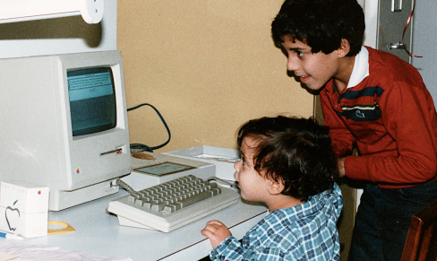

1985
1990
1995
2000
2005
2010
My name is Adam Freidin
1982
2012
I am a programmer.
This is my resume.
This is my resume.
1987
1992
I was introduced to computers when I was little...
1992
1993
...and started programming in Pascal when I was 10.
1996
2001
By the end of highschool I knew C (and C++), (and a
really poorly implemented language I developed
because I didn't know that I couldn't), I was also really bad at TEX, but I didn't know it then.
2001
2005
I went to UCSC and received a planned BA in Mathematics,
and an unplanned BS in Computer Science.
2002
2005
At UCSC, I experienced more C, C++,
ML, Lisp, Scheme, Prolog, SQL (and xQuery), PHP, and Java.
I also had a small programming job doing both
server and client-side java.
2006
2009
I then worked at Santa Cruz Games right in
downtown Santa Cruz developing Video Games.
I would say Embedded Systems, except it was fun.
2006
2008
I developed many different things there:
- memory allocators,
- loading patterns,
- serializers,
- late 80's-type graphics engines,
- AI frameworks, and
- a localization framework.
2007
2009
We shipped lots of games,
- Superman Returns (DS)
- Superman Returns - Fortress of Solitude (GBA) -- Highest rated superman game EVER
- Godzilla Double Smash (DS) -- Google: "The Worst DS Game Ever"
- Tombraider Underworld (DS)
- Spiderman v.s. the Masked Menace (Plug and Play)
- and more...
2008
2009
I was project lead on the Spiderman title:
I wrote the tool, the engine, the gameplay, the AI systems, and all the level scripting. Everything but the art and the audio system. It was a great 9 months.
2007
2009
The tool for Spiderman relied upon my reflection system for C++
which adds some dynamic features to the language.
2007.5
2009.5
We used SCons for the the build system,
so I learned a little python too.
2010.5
2011
I also do photography. I have a few shots that made it into a local paper:
2010.75
2011.3
I returned to Santa Cruz to work at a rails startup called LineMonkey building a Point of Sale running on HTML5.
My job was to reimplement the public interface and the HTML5 web application Point of Sale
2011.5
2012
I'm currently working for Adobe Systems, Inc.
2012
2015
Thanks for reading, please contact me at adam.freidin@gmail.com with any questions, comments, or job offers.
I also have a printable resume.